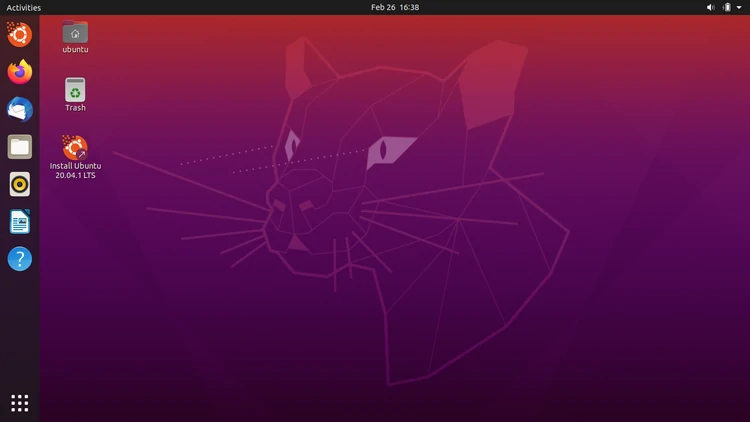
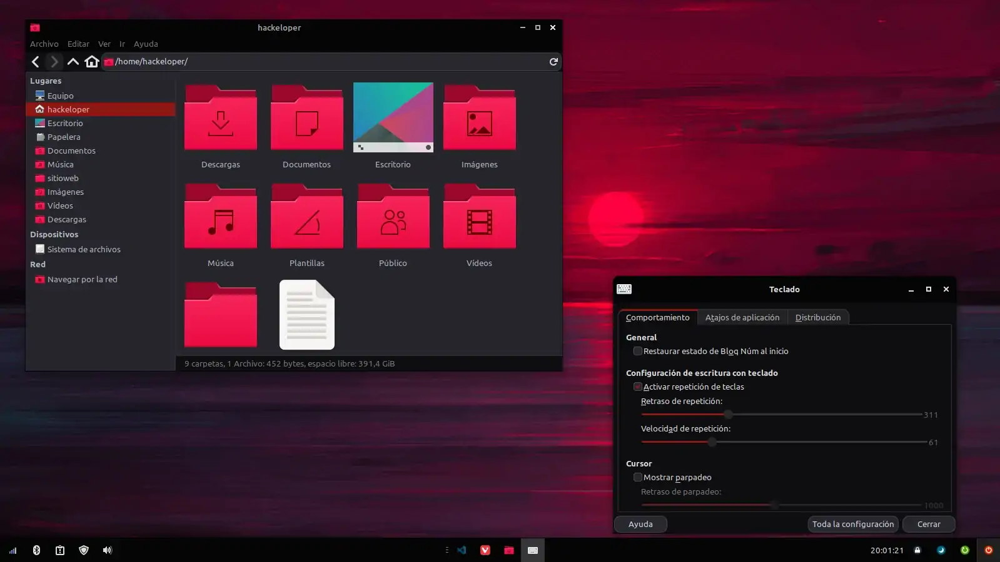
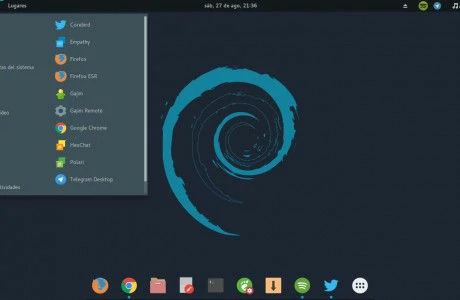
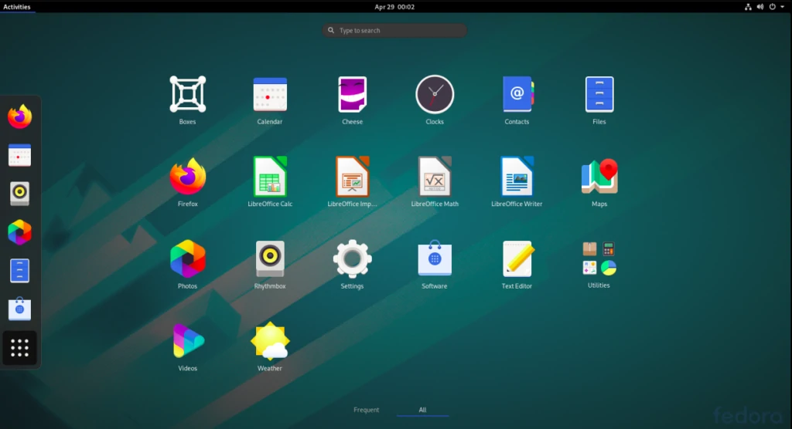
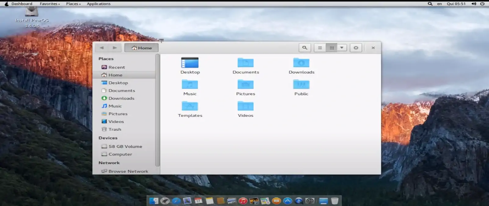

linux distros
To clarify, we call the different "flavors" of Linux as distros instead of distributions, but that is not what this article is about, throughout the content you will find some information about the distros I will name, I will not say everything, why? If I do you would never finish reading this, so if you fall in love with a distro, I will leave its link in the header so you can learn more about it.
The distros you will see here are oriented to newbies or people who have not tried Linux to people who have many years of experience using Linux, the latter must have a great learning of the terminal commands of this OS (Operating System), also, you will not have excuses like "my PC can not run that because it has 2gb of ram" or "my PC is too old", no offense, I say the above because I before trying Linux for the first time spoke badly of this, and when I first used Ubuntu, left a good taste in my mouth.
Ubuntu: The Best for Linux First-Timers

Let's start with the most recommended distro for users who want to get into Linux, it is highly recommended because it does not require advanced configurations (I approve this), I lasted about 8 months using Ubuntu and I had no errors, of course, I did not touch things I should not have done. In Ubuntu you can have many desktop environments, but by default comes Gnome, the minimum RAM requirement is 2gb, but it is recommended to have more than 4gb because with four is somewhat short, it happened to me a lot when using VS Code, Telegram, and three tabs (WhatsApp, Udemy and the local host) of Google Chrome.
What are the Ubuntu requirements?
To install and use Ubuntu, your PC requires the following:
- Memory RAM: 2gb minimum (4gb recommended)
- Processor architecture: 64 bits, I must mention that the processor architecture is NOT defined by the operating system architecture, check the processor by looking for the model of your PC.
- 2 GHz dual core processor or better
As you can see, Ubuntu is not so exquisite in terms of hardware requirements, as I said before, by clicking on the headers you will go to the official pages of each distro, below you will see a screenshot of the default appearance of Ubuntu with Gnome
Derived Distros
Ubuntu has a long list of derived distros, but the most popular are:
- Linux Mint
- Xubuntu
- Lubuntu
- Ubuntu Budgie
- Ubuntu Mate
- Kubuntu
- Zorin OS
- Elementary OS
Xubuntu: Best for low-income Linux First-Timers
There is not much to say about Xubuntu, as its name suggests, it is based on Ubuntu, the difference here is that Xubuntu does not have Gnome as desktop environment, it has XFCE, hence the X in its name, the appearance can be a bit old-fashioned, but with certain customizations (it is very easy to customize Linux, easier than in Windows, plus you do not have many restrictions) you can give it a more modern view.
The advantage of using Xubuntu is that computers with 1gb of RAM can use it, it is not recommended, but that is the minimum to be able to use it, I'm sure you wonder why it is not recommended? xubuntu uses 700mb of RAM by default without anything open, if you open Chrome, you would crash your PC, so it would be better to have at least 2gb.
What are the Xubuntu requirements?
- Memory RAM: The official xubuntu site mentions that the PC must have at least 512mb of RAM (I recommend to have at least 1gb), and they recommend to have 2gb of RAM for a good performance.
- Free space on hard disk: they mentions at least 8gb free, but recommend 20gb free.
Xubuntu vs. Lubuntu
Ok, obviously I am not going to make a comparison between which is better, since both fulfill their function: to satisfy the needs of low-end or old PCs, Lubuntu currently has LXQT as desktop environment, which is also characterized by being lightweight. Below you can see two images to compare the desktop that both Ubuntu distros have by default.
Linux Mint: For All Users
Linux Mint is my favorite Linux distro, many professional programmers and developers use it in their day to day, since it has options for all PCs, by this I mean that it meets the needs of PCs of all ranges, since When you download this they give you a choice of three desktop environments: Cinnamon, the one they made especially for LM (I'm going to refer to Linux Mint that way), Mate or XFCE.
I use the version with XFCE, which surprisingly consumes only 500mb of RAM! Also, its default appearance was very ugly, so I gave it a new look that you can see below, without a doubt, this is the best Linux distro I have tried, previously I tried Pop! _OS for 1 month but it is not very We recommend that we say ... you need very expert knowledge.
I recommend that you visit their official website so that you know how much is the minimum and recommended requirements to install and use LM on your PC, since as I said before they offer three options to install.
Debian: another for Linux First-Timers

This is another great distro to start from scratch in Linux, in case you did not know, Ubuntu is based on Debian, it should be noted that the .deb packages are characteristic of Debian, only that Ubuntu being based on Debian has the possibility of being able to install .deb packages, in case you are still a bit lost, I could say that it is the windows .exe, but no, it is simply an installation package of a specific program.
I needed to mention that, in case you want to go from Windows to Linux, you will not be able to install .exe files, Linux programs have many ways to install themselves, but I will leave that for another article. Debian has among its desktop environments, Gnome, XFCE, KDE Plasma, among others.
There are many distros derived from Debian, even, Linux Mint has a version that is based on Debian, in addition to this and Ubuntu, there is one that has been recognized for cybersecurity and ethical hacking, Kali Linux, but I ask you, please, NO install it unless you are an expert and need or work with cybersecurity. Below you can see an image of the appearance that it offers by default
Fedora: Linus Torvalds' OS as of 2020

This is also known, it is developed by a supported community called Fedora Projectthat is sponsored by Red Hat Enterprise, hence its name from the Fedora hat. This OS offers many editions, such as office automation, games, design, among others. It offers various desktop environments to install, both light and somewhat heavy but with great features, such as Gnome, XFCE, KDE and LXDE
What are the Fedora requirements?
Many users say that Fedora manages memory resources better than Windows, but I do not know if this is true, but anyway, this is what you need at least to install and use Fedora, I recommend that you visit its official site for more information .
- A CD or DVD drive, as well as the ability to boot from that drive.
- 1 Ghz processor or higher.
- At least 1 GB of memory (RAM).
- AAt least 10 GB of permanent storage space (hard disk).
Below you can see an image of the appearance that it offers by default.
Arch Linux: For Veterans with the Terminal

This is one of the Linux distros that programmers or developers more experienced with handling the Linux terminal use, because its installation is by commands, that is, you have the files, but you choose what you want to have, for For example, a Gnome desktop environment with a Kernelv.5.X and certain configurations or customizations, is difficult to install, so if you are a newbie and don't know how to install it, I recommend that you assist with an expert.
I would say something more about it, but there is little I can say, since as it is highly customizable it is possible that the space required for storage and RAM memory may vary a lot, so as not to leave this section so empty, I leave you some distros that are derived from arch, if you want to install any of them it is with your own consent.
- Anarchy
- RaspArch
- Manjaro
- Parabola
- ArcoLinux
- EndeavourOS
- Garuda Linux
PearOS: MacOS for linux
If you love MacOS but you can't use it because you don't have a mac and you don't have enough money to buy one, pearOS is an excellent alternative, in its website that you can access by clicking on the header, the design of this is practically a copy of macOS made with great affection by its creators, who try to resemble their OS as much as possible with the bitten apple's one.
Although in any Linux distro with great customizations you can give it a macOS-like look, if you don't have much time to customize your OS, then this is perfect for you, however, I recommend that you install one of the other distros, as it is believed that one has been discontinued and there are not many reviews on the internet, so be careful... below you can see a screenshot of its latest version.
